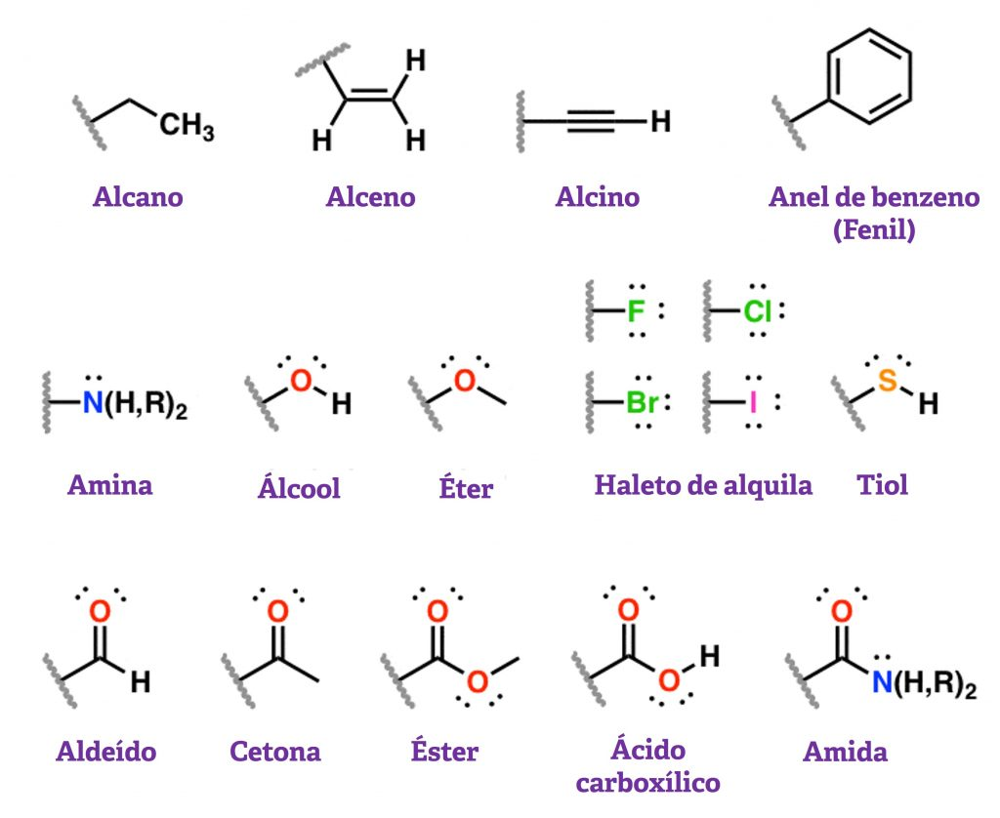

Famílias de compostos orgânicos e polímeros

Revendo os principais grupos funcionais é possível classificar os polímeros em famílias importantes:
- Poliolefinas, obtidas por polimerização de hidrocarbonetos insaturados
- Poliacrílicos, cujos monómeros são derivados do ácido acrílico
- Poluretanos, resultantes da ligação de grupos hidroxilo e isocianato
- Poliamidas, resultantes da ligação de grupos carboxilo e amina
- Poliésteres, resultantes da ligação de grupos carboxilo e hidroxilo